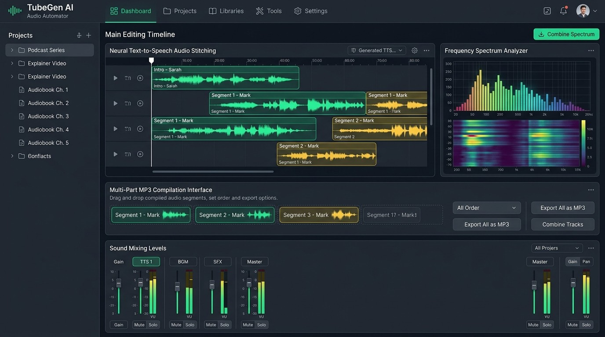

1. High-Level Asynchronous Pipeline Architecture
Decoupled structural design mapping filesystem execution boundaries into neural speech interfaces.

The engine implements a decoupled asynchronous task dispatcher built entirely on Python's native asyncio paradigm. Unlike synchronous automation tasks that suffer bottleneck hangs when coordinating disk I/O with remote web server network events, this architecture completely abstracts procedural data reading from runtime execution. The pipeline systematically reads raw text sources from structured sub-folders, checks file properties for state verification, and targets specialized external APIs without blocking interface tasks.
+---------------------------------------------------------------------------------+
| LOCAL MANIFEST LAYER (File Ingestion) |
| [title.txt Manifest] -----> Reads Target Job Iteration Directories |
+---------------------------------------------------------------------------------+
|
v (Async Event Loop Initialization)
+---------------------------------------------------------------------------------+
| CORE TEXT PROCESSING ENGINE (Split & Clean) |
| - regex filename validation - split_text_smart() - Syntax Weight Mapping |
+---------------------------------------------------------------------------------+
|
v (Network Dispatcher Layer)
+---------------------------------------------------------------------------------+
| EDGE-TTS ASYNCHRONOUS INTERACTION INTERFACE |
| - 8,400 Max Token Guard - Pitch/Rate Tuning - Exponential Backoff Queue |
+---------------------------------------------------------------------------------+
| | |
v [Chunk 1 Render] v [Chunk 2 Render] v [Chunk N Render]
+------------------+ +-------------------+ +-----------------+
| temp_audio_1.mp3 | | temp_audio_2.mp3 | | temp_audio_n.mp3|
+------------------+ +-------------------+ +-----------------+
| | |
+----------------------------------+----------------------------------+
|
v (Sequential Path Sorting)
+---------------------------------------------------------------------------------+
| PRODUCTION AUDIO COMPILER (MoviePy Concat Engine) |
| - Regex Integer Sorting - AudioFileClip Buffering - Master MP3 Rendering |
+---------------------------------------------------------------------------------+
|
v (Automated Storage Lifecycle Cleanup)
+---------------------------------------------------------------------------------+
| FINAL RENDERED DIRECTORY (pyaudio Master Output) |
+---------------------------------------------------------------------------------+